两个正方形，橙色部分有多大？
左边是一个边长 4 cm 的正方形 ABCD，右边斜放着一个边长 5 cm 的大正方形，
它的一条边正好是 DE。点 E 在 BC 上，EC = 3 cm。图中的三块橙色，求它们的总面积。
小正方形边长 4 cm
大正方形边长 5 cm
EC = 3 cm
求 橙色面积
2026 年 11 月 27 日 · 五年级数学互动讲解
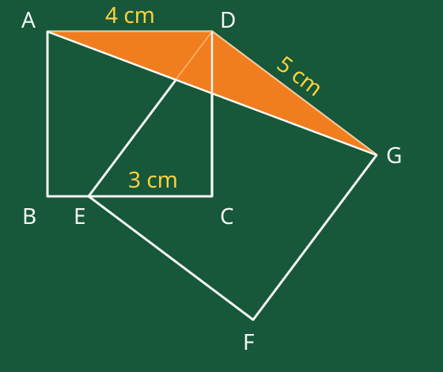
查看两正方形原题的完整讲解与旋转演示
橙色面积 = 6 cm²
底 AD = 4 cm，高 = 3 cm，4 × 3 ÷ 2 = 6
再多懂一点
为什么先看整体更方便？
三块橙色被线段 DE 和 DC 切开，切口交点（图中 P、Q 两点）的相关长度没有直接标出，
每一块单独计算还要先推导交点和相关长度，步骤更复杂。先忽略内部切分线，三块合起来正好是一个完整的三角形，直接求整体更简便。
看到被切碎的阴影，先想一句：它们拼起来是什么图形？
换个方法验算：装进大长方形
把三角形 ADG 装进宽 8 cm、高 3 cm 的长方形（A 到 H 那一段正好 8 cm），
长方形面积 8 × 3 = 24。减去两边两个空白直角三角形：
24 − 8×3÷2 − 4×3÷2 = 24 − 12 − 6 = 6 cm² ✓
两种方法答案一致，放心。
一句话记住这道题：把橙色三块合看成一个三角形（面积相加），底是现成的 4 cm；
高藏起来了，把小直角三角形 △DEC 绕点 D 旋转 90°——DE 与 DG 同为大正方形的边、等长且夹角正好 90°，
所以 E、C 分毫不差地落在 G、H 上，高就等于 EC = 3 cm（旋转）。
这道题的两个关键动作是：整体观察 + 旋转。
给上海五年级同学的面积思考课
面积题，换个思路。
从上面的两正方形出发，补齐 11 类常用思路，再用组合题把它们连起来。分类用来帮助理解，不是要求背下来的口诀，也不表示穷尽所有题目变式。
先自己画一画；卡住时只展开提示，最后再看完整讲解。每题需要的知识都会在讲解中说明，动画可以暂停、分步和复位。未启用 JavaScript 时，仍可看关键对照图与完整文字。
开始前：底、高、面积相加和一半
长方形面积 = 长 × 宽；正方形面积 = 边长 × 边长。三角形的高必须垂直于所选底边所在的直线，高也可以落在底边延长线上。
无缝、无重叠地拼起来，面积可以相加；两份完全相同的图形，总面积是一份的两倍。后面会用剪拼解释三角形、梯形和平行四边形公式，不要求先记住公式。
“同高看底”的意思是：高相同时，底长几倍，面积就是几倍；“同底看高”同理。燕尾、蝴蝶等是这些关系的组合，属于提高题，不代表五年级必考内容。
01 / 方法
整体观察与分割
先看边界，再决定分还是合。
01三块阴影，先看外轮廓
在长 12 cm、宽 6 cm 的长方形中，连接左上与右下顶点，再从左上顶点连到底边上的两个分点。求图中三块橙色的面积和，两个分点的位置不必知道。
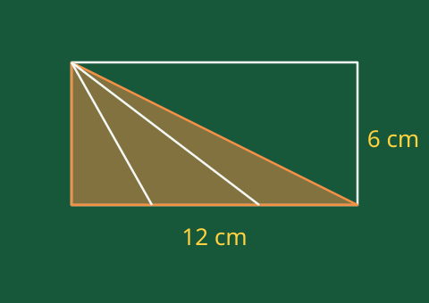
先看题面，不按图上量出的长度作答。
看一点提示
用手遮住三角形内部的两条线。阴影的外轮廓改变了吗？
查看完整讲解与演示
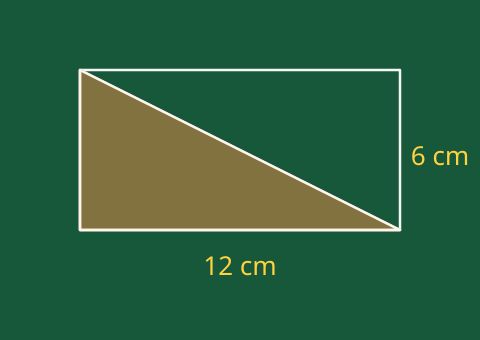
橙色为重点区域；青色、黄色辅助比较。动画是观察工具，成立的理由在下方。
- 先认外轮廓：三块之间没有空隙，也没有重叠，合起来就是长方形的一半。
- 暂时忽略内部切分线。大三角形的底是 12 cm，对应的垂直高是 6 cm。
- 三角形面积用底乘高再除以二；不必分别求两处分点和每小块的面积。
12 × 6 ÷ 2 = 36（cm²）
想明白再走：能合看，是因为各块刚好铺满同一个大三角形；隔着空白的几块不能直接当作整体。
返回方法目录 ↑
02 / 方法
补全求差
先装进熟悉的大图形，再减掉空白。
02缺了一角的纸板
一块纸板原来是长 12 cm、宽 8 cm 的长方形，右上角剪掉长 4 cm、宽 3 cm 的小长方形。求剩下的橙色面积。
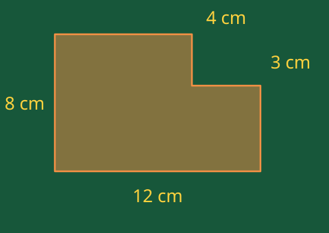
先看题面，不按图上量出的长度作答。
看一点提示
缺角不好直接套公式，可以先把剪掉的一角补回来。
查看完整讲解与演示
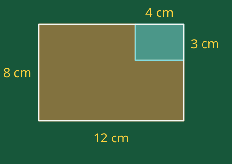
橙色为重点区域；青色、黄色辅助比较。动画是观察工具，成立的理由在下方。
- 先补回右上角。补完后，整个长方形的长 12 cm、宽 8 cm，面积是 96 cm²。
- 补上的小长方形长 4 cm、宽 3 cm，面积是 12 cm²。
- 橙色是整个长方形减去缺角：96 − 12。也可分成 8 × 8 和 4 × 5 两块验算。
12 × 8 − 4 × 3 = 84（cm²）
想明白再走：做减法前，检查被减掉的部分是否恰好是缺口，不能多减或漏减。
返回方法目录 ↑
03 / 方法
割补与平移
剪下去的每一块，原样搬到新位置。
03斜着的地块，剪一块再平移
橙色平行四边形的底是 12 cm，垂直高是 8 cm。求面积，并说明为什么不需要斜边的长度。
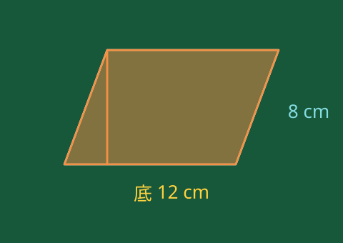
先看题面，不按图上量出的长度作答。
看一点提示
从左上顶点向底边作垂线，把左边的三角形移到右边。
查看完整讲解与演示
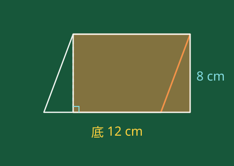
橙色为重点区域；青色、黄色辅助比较。动画是观察工具，成立的理由在下方。
- 先沿垂直于底边的线剪开左端，分出一个直角三角形。注意：8 cm 是垂直高，不是斜边。
- 把剪下的三角形向右平移一个底边长。没有拉伸，也没有转动，正好填满右侧缺口。
- 拼成的长方形底仍为 12 cm，高仍为 8 cm；剪拼没有空隙和重叠，所以面积不变。
12 × 8 = 96（cm²）
想明白再走：平移时每个顶点移动相同的方向和距离；不能把剪下的小块随意拉长。
返回方法目录 ↑
04 / 方法
复制与倍拼
算的是几份，最后就还原为几份。
04复制一个三角形，为什么要除以二？
一个三角形的底长 8 cm，对应的高是 6 cm。复制一个完全相同的三角形，试着拼成平行四边形，再求原三角形面积。
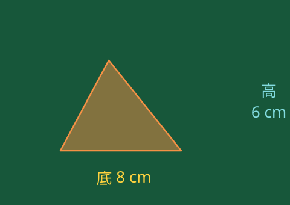
先看题面，不按图上量出的长度作答。
看一点提示
拼完后得到的是一份原图，还是两份原图？
查看完整讲解与演示
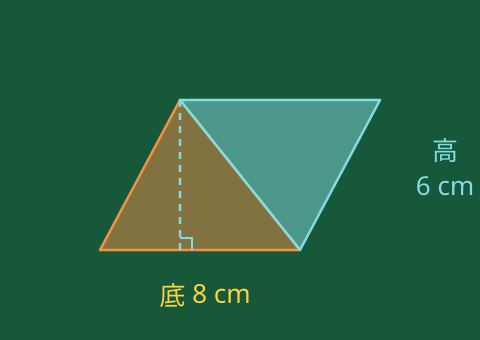
橙色为重点区域；青色、黄色辅助比较。动画是观察工具，成立的理由在下方。
- 认清一组底和高：底长 8 cm，高是到这条底所在直线的垂直距离 6 cm。
- 复制一份，绕右侧斜边的中点旋转半周。两份三角形沿这条边拼接，没有空隙和重叠。
- 新平行四边形的底 8 cm、高 6 cm，面积是 48 cm²。这是两份原三角形，所以一份要除以二。
8 × 6 ÷ 2 = 24（cm²）
想明白再走：两份必须完全相同；“除以二”来自份数，不是看见三角形就机械套一个二。
返回方法目录 ↑
05两个梯形，上下底接成一条底
梯形上底 6 cm、下底 12 cm、垂直高 7 cm。用两个完全相同的梯形拼图，求一个梯形的面积。
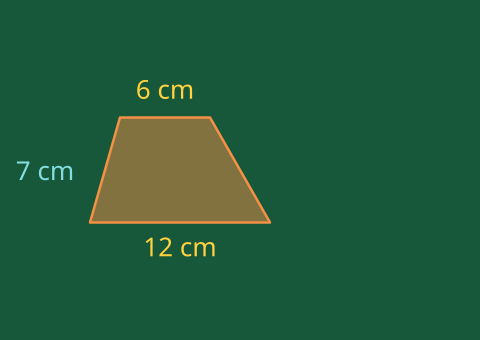
先看题面，不按图上量出的长度作答。
看一点提示
把第二个梯形倒过来，观察新图形的底由哪两段组成。
查看完整讲解与演示
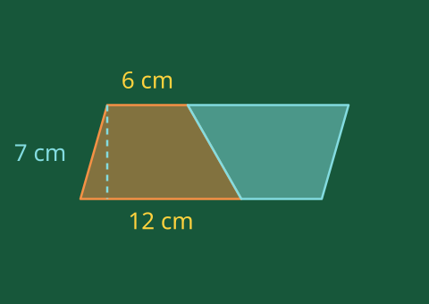
橙色为重点区域；青色、黄色辅助比较。动画是观察工具，成立的理由在下方。
- 上底 6 cm、下底 12 cm，两条底互相平行；7 cm 是它们之间的垂直距离。
- 复制一份，绕右腰中点旋转半周，两份沿右腰拼接。新平行四边形的底为 6 + 12 = 18 cm，高仍为 7 cm。
- 先求两份的总面积 18 × 7，再除以二。不能只取下底乘高。
(6 + 12) × 7 ÷ 2 = 63（cm²）
想明白再走：上底平移、腰变斜都不会改变这个推导，前提是上下底和垂直高不变。
返回方法目录 ↑
05 / 方法
旋转找关系
认准旋转中心、角度和重合的边。
06四个角一样，斜正方形有多大？
边长 7 cm 的大正方形内，四个角各放一个完全相同的直角三角形，直角边分别长 3 cm 和 4 cm。中间橙色部分已知是正方形，求它的面积。
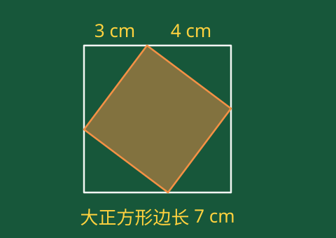
先看题面，不按图上量出的长度作答。
看一点提示
斜正方形的边长不知道，但整个大正方形和四个角能不能算？
查看完整讲解与演示
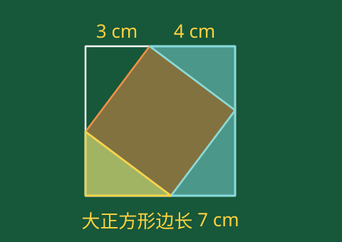
橙色为重点区域；青色、黄色辅助比较。动画是观察工具，成立的理由在下方。
- 每个角的直角三角形面积是 3 × 4 ÷ 2 = 6 cm²。图中边长 7 cm，也等于 3 + 4。
- 把一个角的三角形绕大正方形中心旋转，可以依次与其他三个角重合。四个角既然完全相同，总面积就是 4 × 6。
- 大正方形面积 7 × 7 = 49 cm²，减去四个角的 24 cm²，得到中间面积；不用先求斜边。
7 × 7 − 4 × (3 × 4 ÷ 2) = 25（cm²）
想明白再走：本题已说明四个角完全相同、中间是正方形。不能仅因图画得像，就把它们当作已知条件。
返回方法目录 ↑
06 / 方法
对称与翻折
先分清材料面积与覆盖面积。
07折成两层，覆盖面积要算几份？
一张边长 8 cm 的正方形纸，沿左上到右下的对角线对折。折好后纸在桌面上覆盖多少平方厘米？纸本身的总面积有没有改变？
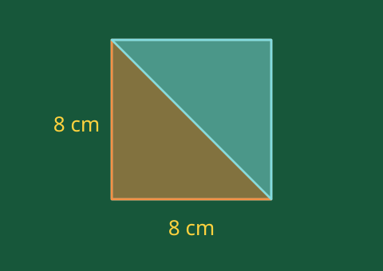
先看题面，不按图上量出的长度作答。
看一点提示
区分“纸有多少”和“桌面被覆盖多少”。叠起来的两层不能在桌面上算两次。
查看完整讲解与演示
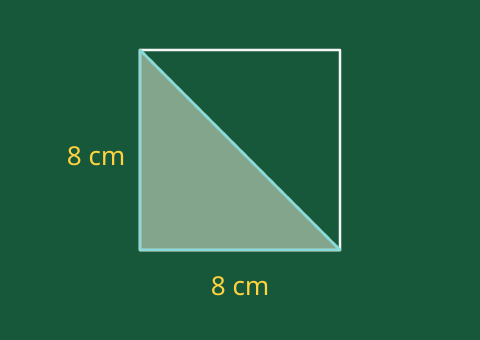
橙色为重点区域；青色、黄色辅助比较。动画是观察工具，成立的理由在下方。
- 对角线把正方形分成两个完全相同的直角三角形。正方形总面积是 8 × 8 = 64 cm²。
- 沿对角线翻折，上半张与下半张完全重合。动画中的压扁再展开表示翻到另一面，不是把纸剪小。
- 桌面只覆盖半个正方形，因此是 32 cm²；纸本身仍有 64 cm²，只是变成了两层。
覆盖面积：8 × 8 ÷ 2 = 32（cm²）；纸面积仍为 64 cm²。
想明白再走：面积是否变化，要先说明测量的对象：材料面积与重叠后的覆盖面积是两回事。
返回方法目录 ↑
07 / 方法
等积变形
底和对应的高不变，面积才不变。
08顶点跑到外面，面积还一样吗？
三角形底 BC = 6 cm，顶点 P 沿着与 BC 平行的直线移动。这两条平行线相距 5 cm。当 P 移到 B 的左侧时，三角形面积是多少？
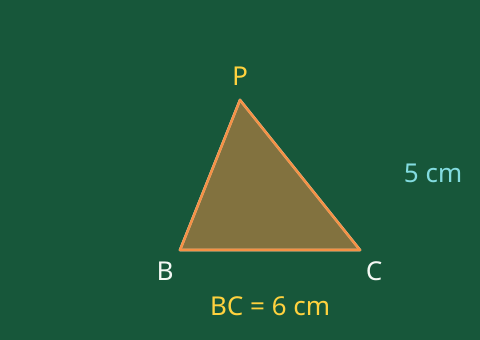
先看题面，不按图上量出的长度作答。
看一点提示
高量到的是底边“所在直线”，不要求垂足在底边这一小段上。
查看完整讲解与演示
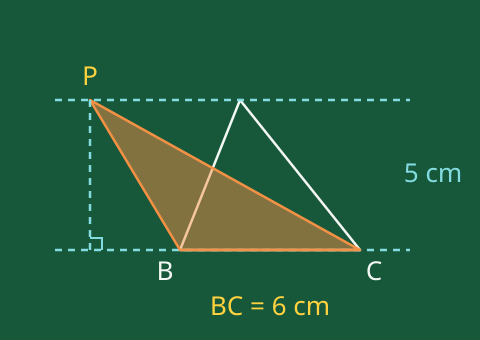
橙色为重点区域；青色、黄色辅助比较。动画是观察工具，成立的理由在下方。
- 先固定底 BC。P 所在的轨迹与 BC 平行，两线距离始终是 5 cm。
- P 向左移到 B 的外侧后，高落在 BC 的延长线上；底还是 6 cm，高还是 5 cm。
- 形状变了，底和高没有变，面积仍是 6 × 5 ÷ 2。这就是拉窗帘成立的条件。
6 × 5 ÷ 2 = 15（cm²）
想明白再走：能保持面积的是沿平行线移动，不能只说“点动了但底没变”。
返回方法目录 ↑
09底一样，面积就一定一样？
两个三角形共用长 6 cm 的底 BC。原来 P 到底边所在直线的距离是 5 cm，后来变为 2 cm。两次面积是否相等？
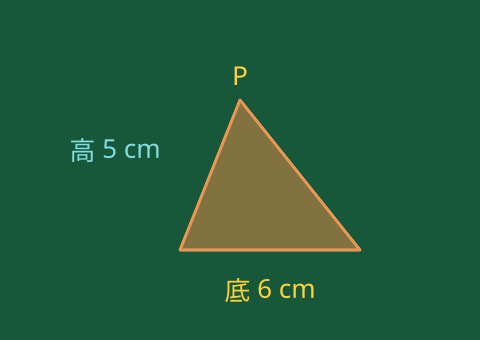
先看题面，不按图上量出的长度作答。
看一点提示
这次 P 没有沿平行于底边的直线移动。比较的是垂直距离，不是斜边。
查看完整讲解与演示
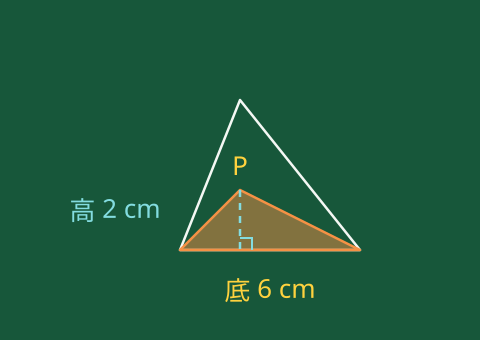
橙色为重点区域；青色、黄色辅助比较。动画是观察工具，成立的理由在下方。
- 原三角形的底 6 cm、高 5 cm，面积为 15 cm²。
- 把 P 向底边靠近。底没有变，但垂直高由 5 cm 变成 2 cm。
- 新面积为 6 × 2 ÷ 2 = 6 cm²。两次相差 9 cm²；“同底”等积还缺“等高”。
原来 15 cm²，后来 6 cm²，不相等。
想明白再走：遇到移动点，先检查轨迹是否平行于选定的底；只看到一条底不变不够。
返回方法目录 ↑
08 / 方法
公共部分与等量替换
两边加减同一块，面积差保持不变。
10交叠多少不知道，仍能比较两块
边长 8 cm 和 6 cm 的两个正方形部分重叠。橙色只属于大正方形，青色只属于小正方形，黄色是公共部分。橙色比青色大多少？公共部分的边长没有给出。
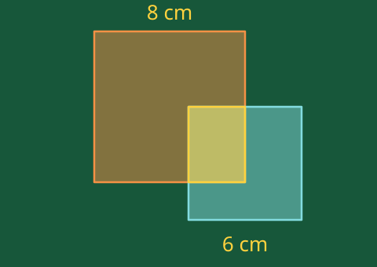
先看题面，不按图上量出的长度作答。
看一点提示
给橙色、青色都加上同一块黄色部分，面积差会变吗？
查看完整讲解与演示
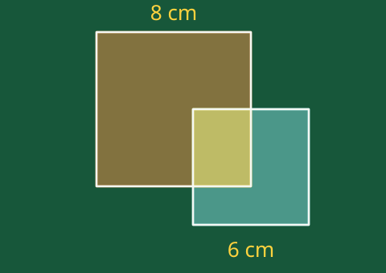
橙色为重点区域；青色、黄色辅助比较。动画是观察工具，成立的理由在下方。
- 把黄色公共部分补回橙色，就得到整个大正方形，面积 64 cm²。
- 给青色也补回同一块黄色，得到小正方形，面积 36 cm²。两边加的是同一块，差不变。
- 所以橙色减青色，等于大正方形减小正方形。不需要先算公共部分；本题不能单独求出橙色面积。
8 × 8 − 6 × 6 = 28（cm²）
想明白再走：“能求两块的差”不等于“能分别求每一块”；重叠面积未知时，要看题目究竟问什么。
返回方法目录 ↑
09 / 方法
等分与面积倍数
不急着列比例式，先把图分成相同的份。
11一条底分成 1 份和 3 份
三角形 ABC 中，M 在 BC 上，BM = 4 cm、MC = 12 cm。已知橙色三角形 ABM 面积为 12 cm²，求三角形 AMC 的面积。
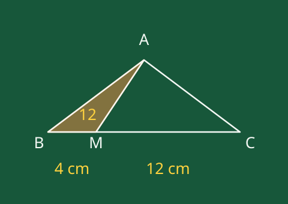
先看题面，不按图上量出的长度作答。
看一点提示
两个小三角形的高是哪一条？每 4 cm 的底对应多少面积？
查看完整讲解与演示
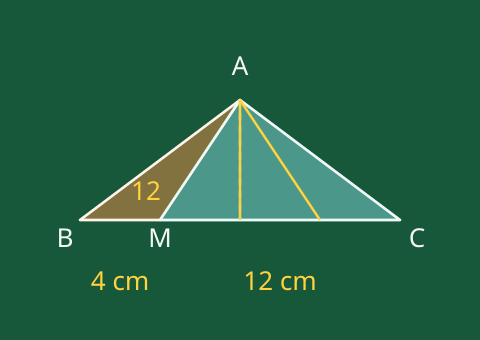
橙色为重点区域；青色、黄色辅助比较。动画是观察工具，成立的理由在下方。
- 从 A 向 BC 作高。两个小三角形同在 BC 所在直线上，共用这条高。
- 把 MC 分成三个 4 cm，每一小段与 A 连成的三角形，都和 ABM 同底长、同高，面积各为 12 cm²。
- AMC 包含三份这样的面积，所以是 12 × 3。不必先求出高；这种共顶点分底结构有时称为鸟头模型。
12 × (12 ÷ 4) = 36（cm²）
想明白再走：只能在同高时按底边倍数比较面积；底长三倍但高不同，面积不一定三倍。
返回方法目录 ↑
10 / 方法
面积差与逆推
从增加或减少的面积中找回长度。
12面积增加了，边长增加多少？
一个长方形高 6 cm、原来长 10 cm。只把长增加一段，高不变，面积增加了 18 cm²。增加的这段长是多少厘米？
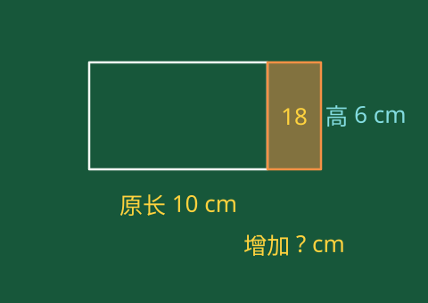
先看题面，不按图上量出的长度作答。
看一点提示
先把增加的面积单独看成一条长方形。它的另一条边知道吗？
查看完整讲解与演示
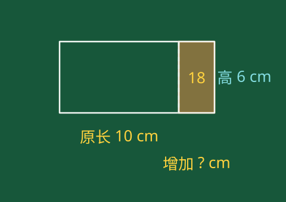
橙色为重点区域；青色、黄色辅助比较。动画是观察工具，成立的理由在下方。
- 原长方形保留不动，把增加的一条用橙色标出；它与原图一样高，都是 6 cm。
- 增加部分本身就是长方形，面积为 18 cm²。要求的是它的宽，不是原图的长。
- 用面积除以已知高：18 ÷ 6 = 3 cm。原长 10 cm 不参与这一步，也可以算新面积 78 cm² 再验算。
18 ÷ 6 = 3（cm）
想明白再走：只增加一个方向时才是一条长方形；四周同时加边框，不能直接套用这一步。
返回方法目录 ↑
11 / 方法
方格与估测
整格、半格、残格，分别处理。
13整格和半格，怎样不漏数？
每个小方格的边长是 1 cm。橙色纸片的顶点都在格点上，斜线恰好沿小方格的对角线。求面积。
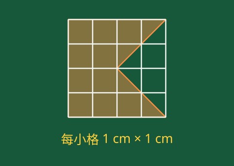
先看题面，不按图上量出的长度作答。
看一点提示
先数整格，再把沿对角线切开的半格单独标记。
查看完整讲解与演示
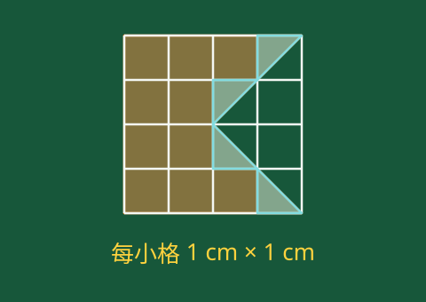
橙色为重点区域；青色、黄色辅助比较。动画是观察工具，成立的理由在下方。
- 按行数整格：从上到下依次是 3、2、2、3 个，共 10 个整格。每格面积 1 cm²。
- 青色标出的 4 个边缘格都恰好是一半，因为斜线连接小方格的两个对角顶点。两个半格合一整格。
- 4 个半格合成 2 个整格，加上原来的 10 个，得到 12 cm²。也可用 4 × 4 减去缺口三角形的 4 cm² 验算。
10 + 4 ÷ 2 = 12（cm²）
想明白再走：顶点在格点上，不代表每个不完整格都是半格。本题能按半格数，是因为斜线沿小格对角线。
返回方法目录 ↑
14弯曲边界，能把每个残格都算半格吗？
图中的花坛铺在方格图上，每个小格面积 1 m²。只用数格法，不用圆面积公式，判断它的面积范围。所有与花坛相交的格子都画在图中。
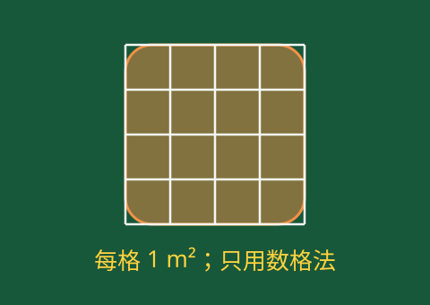
先看题面，不按图上量出的长度作答。
看一点提示
完整在花坛里的格子能确定；边界穿过的格子，只知道占了一部分。
查看完整讲解与演示
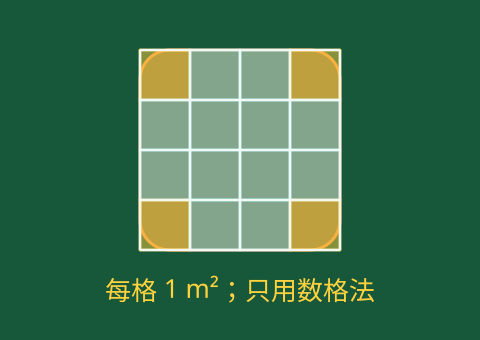
橙色为重点区域；青色、黄色辅助比较。动画是观察工具，成立的理由在下方。
- 先数完全在花坛内部的整格，青色共 12 个。因此花坛面积大于 12 m²。
- 再把被边界穿过的 4 个格子全部算上，一共 16 格，必然比实际面积大。
- 所以实际面积严格在 12 与 16 m² 之间。想估得更准，可以把格子继续细分；不能把每个残格都直接当作半格。
12 m² < 花坛面积 < 16 m²（这是范围，不是精确答案）
想明白再走：估测要保留“约”或范围。本题只数方格，不要求知道弯曲边界的面积公式。
返回方法目录 ↑
12 / 组合运用
组合挑战
把前面的方法接起来，不背模型口诀。
15燕尾结构：中间的点位置没给
三角形 ABC 中，D 在 BC 上，BD = 3 cm、DC = 6 cm；E 是 AD 内部任意一点。已知橙色三角形 ABE 面积为 9 cm²，求三角形 ACE 面积。
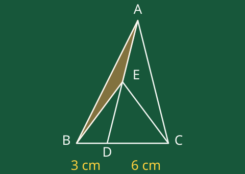
先看题面，不按图上量出的长度作答。
看一点提示
先比较 ABD 和 ACD，再比较 EBD 和 ECD。两次都是同高看底。
查看完整讲解与演示
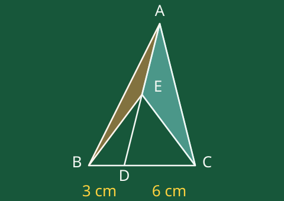
橙色为重点区域；青色、黄色辅助比较。动画是观察工具，成立的理由在下方。
- 把 ADC、ADB 两个大三角形一起看：它们到 BC 的高相同，DC 是 BD 的两倍，所以右边大面积是左边的两倍。
- 下方 EDC 和 EDB 也同高，右边下方面积仍是左边的两倍。E 在 AD 上的具体位置不会破坏这个关系。
- 分别从左右大三角形中减去下方部分，右边剩下的 ACE 就是左边 ABE 的两倍：9 × 2。不能因为 E 看着居中，就假定它是中点。
9 × (6 ÷ 3) = 18（cm²）
想明白再走：E 必须在 AD 上，D 必须在 BC 上；点的位置关系也是已知条件的一部分。
返回方法目录 ↑
16蝴蝶结构：为什么不是只乘三？
梯形 ABCD 的 AB ∥ DC，上底 AB = 4 cm、下底 DC = 12 cm。对角线 AC、BD 交于 O。已知上方橙色三角形 AOB 面积为 2 cm²，求下方三角形 COD 面积。
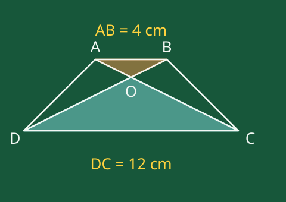
先看题面，不按图上量出的长度作答。
看一点提示
先把上底、下底作为底比较两个大三角形，再换成共同的对角线 BD 作底。底的三倍关系会用到两次。
查看完整讲解与演示
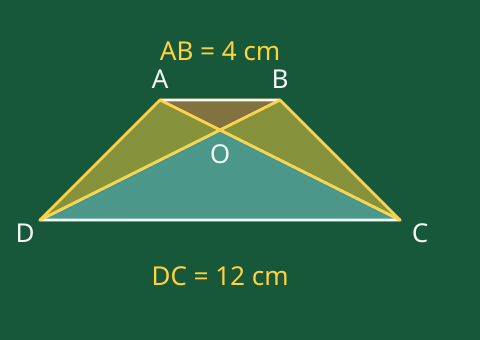
橙色为重点区域；青色、黄色辅助比较。动画是观察工具，成立的理由在下方。
- 看大三角形 ABD 和 CBD。以 AB、CD 为底时，它们的高都是梯形的高，因此 CBD 面积是 ABD 的三倍。再改用共同底 BD：说明 C 到 BD 的垂直距离，是 A 到 BD 的三倍。
- 小三角形 AOB 和 COB 共用底 BO，也使用刚才的两条高，因此 COB = 3 × AOB = 6 cm²。另外 ABD 与 ABC 同底 AB、等高；同时减去 AOB，得到 AOD = BOC = 6 cm²。
- 最后看 AOD 和 COD，它们共用底 DO，C 到 BD 的距离仍是 A 到 BD 的三倍，所以 COD = 3 × AOD = 18 cm²。先乘三，再乘三，全程不用相似三角形定理。
2 × 3 × 3 = 18（cm²）
想明白再走：上下两块的面积不是简单按上下底一倍地比较；这里通过两次换底，把中间的两侧面积关系连起来。
返回方法目录 ↑
17两个并排正方形，三角形跨在中间
边长 8 cm 和 5 cm 的正方形并排放在同一条底线上，共用部分侧边。P 是大正方形左上顶点，Q 是两正方形相接处的底端，R 是小正方形右上顶点。求橙色三角形 PQR 的面积。
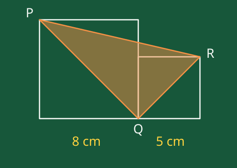
先看题面，不按图上量出的长度作答。
看一点提示
把两正方形装进一个长 13 cm、宽 8 cm 的长方形。三角形外面还剩哪三块？
查看完整讲解与演示
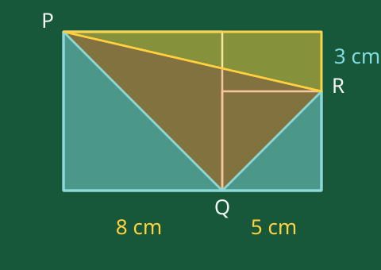
橙色为重点区域；青色、黄色辅助比较。动画是观察工具，成立的理由在下方。
- 补成长方形：长 8 + 5 = 13 cm，高 8 cm，面积 104 cm²。右上方比小正方形多出的高为 8 − 5 = 3 cm。
- 橙色外面恰好有三个直角三角形：左下 8 × 8 ÷ 2；右下 5 × 5 ÷ 2；右上 13 × 3 ÷ 2。它们没有重叠，也刚好填满空白。
- 用大长方形减去这三块：104 − 32 − 12.5 − 19.5 = 40 cm²。关键是补完以后认清每一块的底和高。
13 × 8 − 8 × 8 ÷ 2 − 5 × 5 ÷ 2 − 13 × 3 ÷ 2 = 40（cm²）
想明白再走：右上空白三角形的底横跨整个 13 cm，不是只用小正方形的 5 cm。
返回方法目录 ↑
18两条路相交，重叠部分算几次？
长方形草地长 12 m、宽 8 m。一条横向小路宽 1 m，另一条纵向小路宽 2 m，两路互相垂直并贯通草地。求小路总面积，再求剩余草地面积。
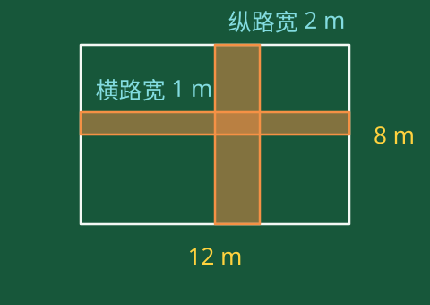
先看题面，不按图上量出的长度作答。
看一点提示
把横路和竖路分别算一遍，交叉的小长方形被算了几次？
查看完整讲解与演示
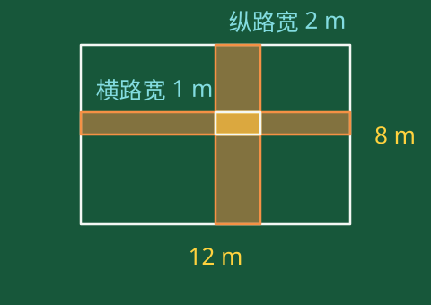
橙色为重点区域；青色、黄色辅助比较。动画是观察工具，成立的理由在下方。
- 横路面积是 12 × 1 = 12 m²，纵路面积是 8 × 2 = 16 m²。先相加得到 28 m²。
- 交叉处是长 2 m、宽 1 m 的长方形，面积 2 m²。分别算两条路时它被算了两次，实际只需要一次，所以减去一次。
- 小路总面积为 12 + 16 − 2 = 26 m²。整块草地原面积 96 m²，剩余草地为 96 − 26 = 70 m²。
小路 26 m²；剩余草地 70 m²。
想明白再走：道路宽度要量垂直于道路延伸方向的距离；这题道路横竖放置，宽度的含义是明确的。
返回方法目录 ↑
19连起三个中点，倒三角形占多少？
三角形 ABC 的底 BC = 12 cm、对应高 8 cm。D、E、F 分别是 AB、AC、BC 的中点，连接 DE、EF、FD。求中间橙色三角形 DEF 的面积。
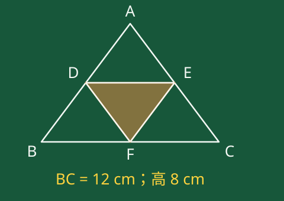
先看题面，不按图上量出的长度作答。
看一点提示
不用先求 DE 长度。试着证明三个角上的小三角形，每个都是大三角形的四分之一。
查看完整讲解与演示
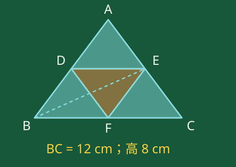
橙色为重点区域；青色、黄色辅助比较。动画是观察工具，成立的理由在下方。
- 大三角形面积为 12 × 8 ÷ 2 = 48 cm²。先连接 BE：因为 E 是 AC 中点，ABE 与 ABC 共用从 B 到 AC 的高，ABE 面积是 24 cm²。
- D 是 AB 中点。ADE 与 ABE 共用从 E 到 AB 的高，底 AD 是 AB 的一半，因此 ADE 面积是 12 cm²。用同样的“两次取半”，另两个角上的三角形也各为 12 cm²。
- 中间部分恰好是大三角形减去三个角：48 − 12 − 12 − 12 = 12 cm²。不需要使用三角形中位线定理。
12 × 8 ÷ 2 ÷ 4 = 12（cm²）
想明白再走：三边都要有中点条件。若只知道某一边被平分，不能就把中间部分认成四分之一。
返回方法目录 ↑
20四块面积，先找相对的两块
长 12 cm、宽 8 cm 的长方形内有一点 P，连接 P 与四个顶点。上方三角形面积 18 cm²，左方三角形面积 14 cm²。求右方橙色三角形面积。
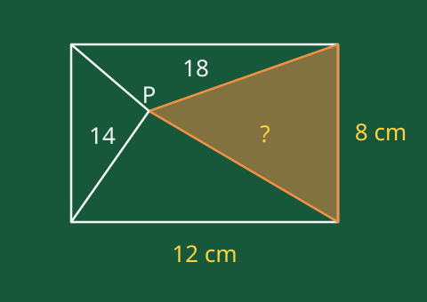
先看题面，不按图上量出的长度作答。
看一点提示
左右两个三角形若分别以长方形的两条竖边作底，它们的两条高加起来是多少？
查看完整讲解与演示
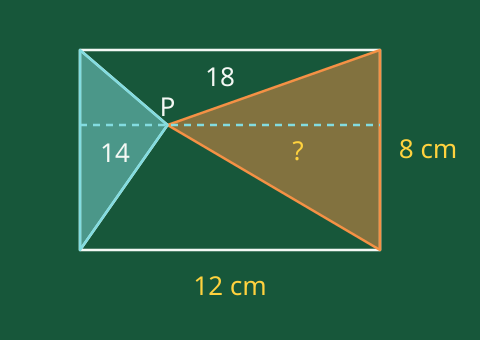
橙色为重点区域；青色、黄色辅助比较。动画是观察工具，成立的理由在下方。
- 左右两个三角形的底都可选长方形的竖边，底长都是 8 cm。它们对应的高分别是 P 到左右边的水平距离。
- 这两条水平距离刚好拼成长方形的长 12 cm。因此左右两块面积之和是 8 × 12 ÷ 2 = 48 cm²，与 P 的具体位置无关。
- 减去已知左方面积 14 cm²，右方就是 34 cm²。上方的 18 cm² 对这个问题不是必要条件；若要算下方，才用 48 − 18 = 30。
8 × 12 ÷ 2 − 14 = 34（cm²）
想明白再走：面积用底与对应的垂直高。这里换成竖边作底，高就是水平方向，不一定画成竖线。
返回方法目录 ↑
做完一题，问自己三句话
- 我保留了什么：长度、角度、底和高，还是两块面积的差？
- 我凭什么这样做：图上的已知条件，还是只因为看着像？
- 算出的是一份、两份、材料面积、覆盖面积，还是一个估计范围？
本页按多边形面积和直观转化组织，组合挑战属于拓展，不要求用勾股或相似定理。弯曲边界只用于数格估测，不把圆面积公式作为前置知识。具体教材册次和校内进度可能不同，不能把“能用小学知识解释”当成“学校已经讲过”。
课程依据：教育部《义务教育数学课程标准（2022年版）》发布页。方法分类是本页的教学编排，不是官方题型目录。
继续练：拉窗帘与图形面积
把分块面积合起来看，再用旋转找到高，是这道题的关键。还可以通过“同底等高”判断面积：
进入拉窗帘图形题库，体验 16 个可操作演示，完成 17 道分层练习。
原来的长方形、平行线和斜小路演示已迁入题库。
返回学习目录